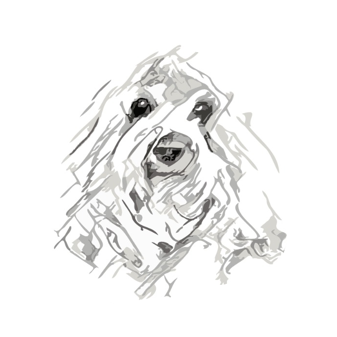
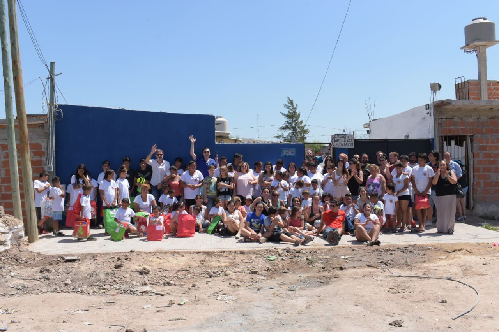
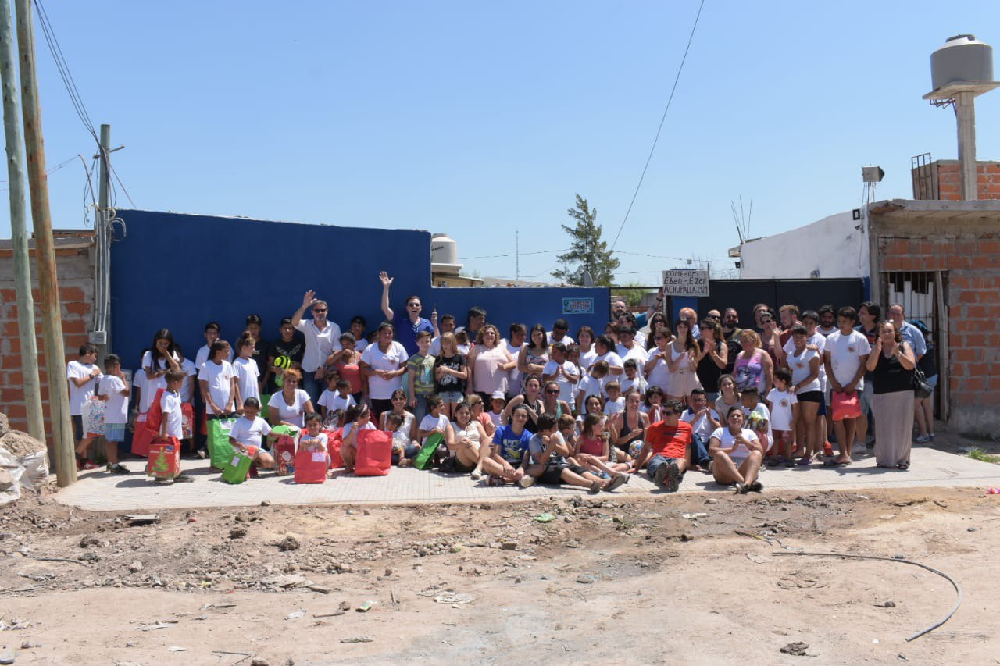
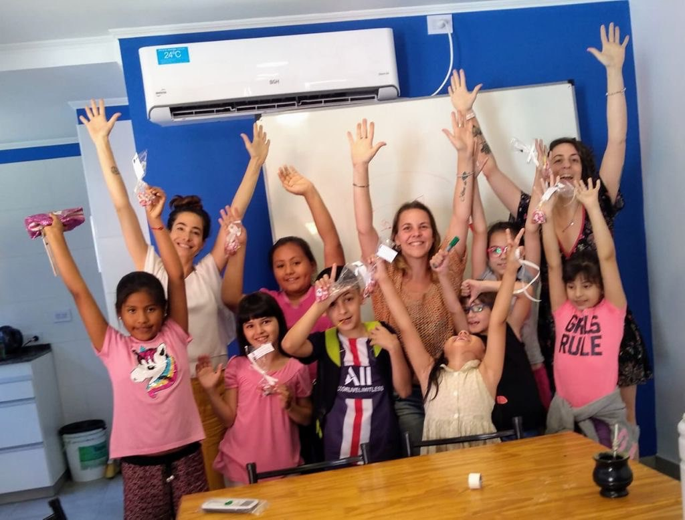
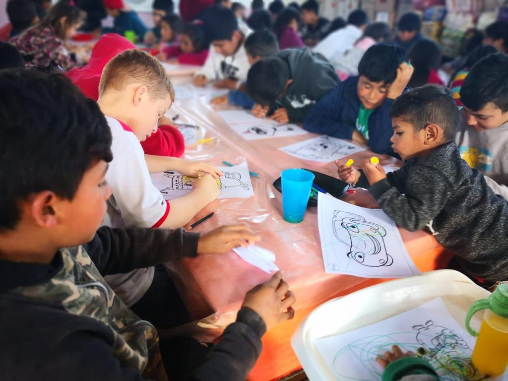
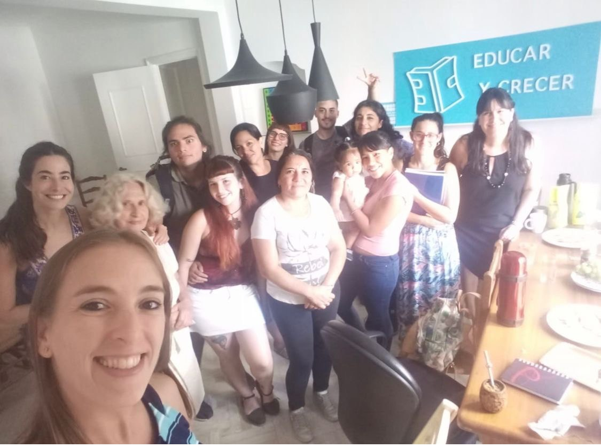
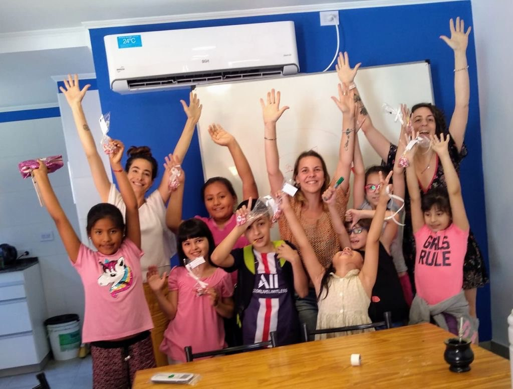
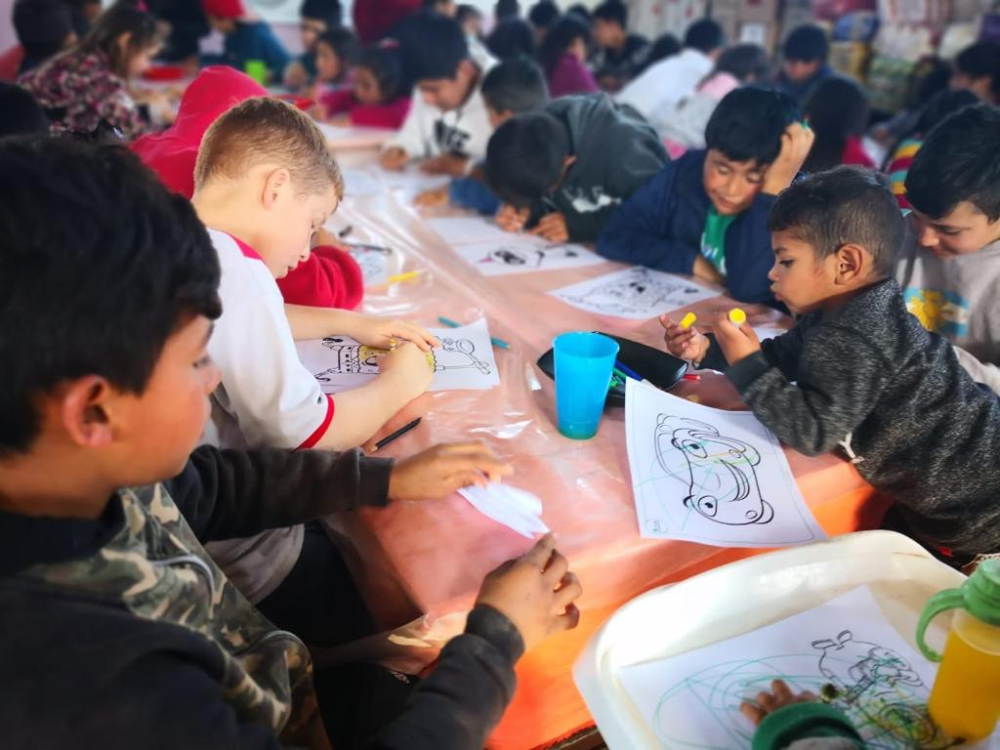
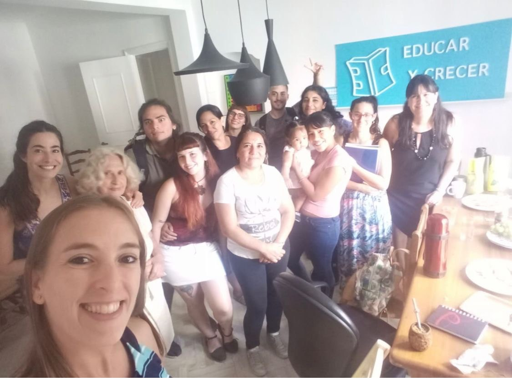

asociación
civil
asociación
civil

Jugando a descubrir sus propios deseos
Puede que existan mares revueltos
Tanta inocencia que albergan sus sueños
Tesoro que brilla en cualquier desierto
Construyamos oasis con sonrisas que abriguen
La mirada de un niño, reflejo de anhelos que su corazón persigue
—Magali Jazmín Bensignor

La risa nos abrazó como amigos y el fuerte deseo de ayudar nos unió como Organización para canalizar las actividades de acción social que veníamos desarrollando.
La risa nos abrazó como amigos y el fuerte deseo de ayudar nos unió como Organización para canalizar las actividades de acción social que veníamos desarrollando.
La risa acorta distancias, la risa cura, la risa oxigena, la risa contiene sueños y nosotros queremos atesorarla desde la infancia.
JOR significa: JAMAS OLVIDEMOS REIR, porque aún en las adversidades alimentar la risa puede regalarnos un mejor presente y construir un mejor futuro.
Es en los sectores vulnerables donde ponemos nuestro trabajo creando espacios de aprendizaje con apoyos escolares, con juego, recreación y expresión, acompañando a niños y adolescentes en su desarrollo educativo y emocional.
¡Ah¡ fuente de inspiración para elegir el nombre de JOR fue Jorge, que con su alegría nos impulsó a tomar su sonrisa como guardiana de muchas. Podés conocerlo acá.


2018: Con la ayuda de la Asoc. Civil Midori diseñamos, coordinamos y realizamos la obra que realizó en el Comedor Eben Ezer de Gonzalez Catan que da de comer a más de 250 niños, evitando que siga sufriendo inundaciones, construyendo baños para mejorar la higiene y demás cuestiones referentes a su correcto funcionamiento.
2018: Con la ayuda de la Asoc. Civil Midori diseñamos, coordinamos y realizamos la obra que realizó en el Comedor Eben Ezer de Gonzalez Catan que da de comer a más de 250 niños, evitando que siga sufriendo inundaciones, construyendo baños para mejorar la higiene y demás cuestiones referentes a su correcto funcionamiento.
Entregamos donaciones de todo tipo para los chicos que concurren con sus familias al Comedor.
2019: en actividad conjunta con los chicos pusimos una huerta, no solo para que el propio Comedor pudiera cultivar sus alimentos sino como actividad educativa para todas las familias que asisten.
2020: capacitamos a docentes y evaluamos a más de 100 chicos para un proyecto educativo a implementar en el Comedor Eben Ezer que atrasado por la pandemia, concretaremos en 2022.
En plena pandemia conseguimos donaciones de computadoras y celulares para que muchos chicos pudieran seguir estudiando.
2021: conseguimos la personería jurídica de JOR ASOCIACION CIVIL.

La falta de oportunidades nos sensibiliza y nos convoca con el compromiso de no ser indiferentes a las necesidades ajenas.
La falta de oportunidades nos sensibiliza y nos convoca con el compromiso de no ser indiferentes a las necesidades ajenas.
La infancia y su inocencia es un tesoro y no queremos ser pasivos ante el daño que pudiera sufrir en sectores vulnerables.
La educación es un derecho de todos y confiamos que es la herramienta más poderosa para abrirnos camino y crear movilidad social ascendente.
Sentimos que ningún ser humano, sobre todo en su infancia, puede crecer sano en un ámbito donde carece de afecto y validación, por eso nuestro acompañamiento no es solo educativo sino también emocional aumentando su capacidad cognitiva desde su estima y su confianza.

Soñamos con poder expandirnos llegando a más niños, niñas y adolescentes de nuestra región, brindándoles apoyo integral desde lo educativo y lo emocional.
Soñamos con poder expandirnos llegando a más niños, niñas y adolescentes de nuestra región, brindándoles apoyo integral desde lo educativo y lo emocional.
Soñamos con tener un espacio propio, cálido, alegre, propicio para la imaginación, la creatividad, que invite al juego, al arte y a todas las actividades recreativas que nos ayuden a ampliar el horizonte dentro de cada niño y como sociedad.
Darles herramientas, habilitar la duda, incentivar la estima
Los niños son la llave que prima
El futuro está en sus manos
La educación es un derecho
Y el más valioso atributo humano
—Magali Jazmín Bensignor
 

 






Gracias a tu aporte, vamos a poder seguir trabajando por las niñas y niños. ¡Sumate ahora! Se parte del cambio. Tu ayuda nos permite seguir cambiando realidades.
Podés realizar tu aporte monetario por los siguientes medios:
CBU 0170316820000032337464
CC $ 316-323374/6
JOR ASOCIACIÓN CIVIL
Asociación Civil JOR ® todos los derechos reservados
Legales